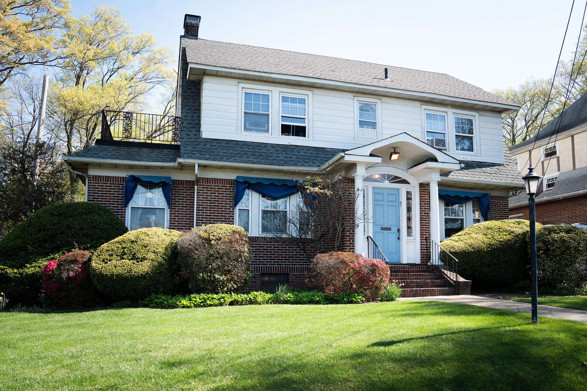

Being doctor-owned means we answer to one person: the patient sitting in the chair. There's no corporate playbook, no production targets, no shortcuts. Just two doctors and a team that's been carefully built, working at a pace that lets us actually listen, plan thoughtfully, and deliver the kind of care we'd want for our own families.
Every detail of our office has been considered, from the warmth of the waiting room to the precision of the tools in each operatory. We believe the environment you're treated in matters as much as the treatment itself, which is why we've invested just as much in comfort and calm as we have in the technology behind every procedure. It's modern dentistry, delivered in a space that actually feels good to be in.

Built around the people we care for.
Our mission is simple: provide exceptional dentistry, build lasting relationships, and stand alongside the community that's stood with us for over forty years. Every patient who walks through our doors deserves time, attention, and care delivered at the highest standard. That's the work we set out to do every day, and the standard we hold ourselves to with every visit, every treatment, and every family we have the privilege of serving.